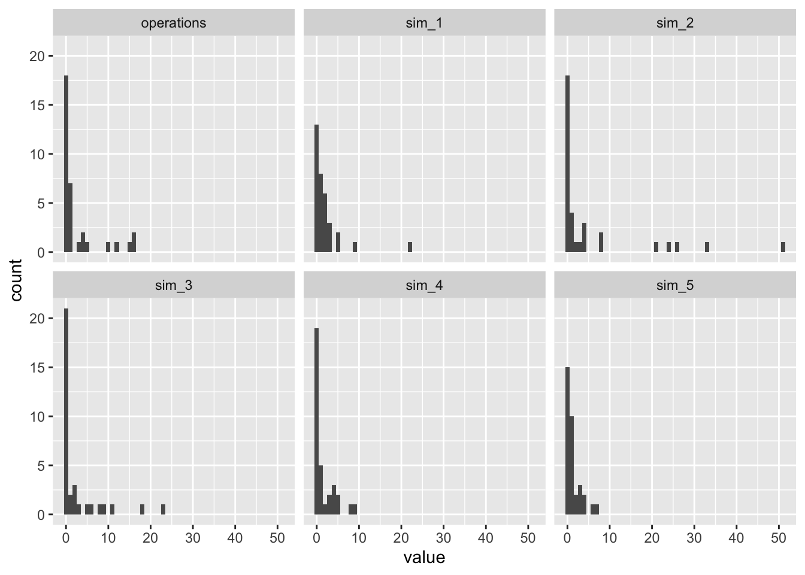

In a prior chapter, we used a negative binomial regression to model the number of enforcement operations in Holland’s (2015) data.
Code
# load packagelibrary(tidyverse)# load data for santiagosant <- crdata::holland2015 |>filter(city =="santiago")# formula corresponds to model 1 for each city in holland (2015) table 2f <- operations ~ lower + vendors + budget + population# nb regressionnb_fit <- MASS::glm.nb(f, data = sant)# simulate from predictive distribution for nbnb_sims <-simulate(nb_fit, nsim =5)# plotbind_cols(sant, nb_sims) |>pivot_longer(cols =c(operations, starts_with("sim_"))) |>separate(name, into =c("type", "sim_id"), sep ="_", remove =FALSE) |>ggplot(aes(x = value)) +facet_wrap(vars(name)) +geom_histogram(center =0, binwidth =1)

Notice that the negative binomial model as too many large values. I have a subtle intuition that the negative binomial is struggling to simultaneously capture the (1) mean, (2) the large spike at zero, and (3) the relative absence of large values.
To address this, we might add a component to the model to inflated the number of zeros relative to the usual negative binomial distribution.
It is fairly common for count data to have lots of zeros. We can imagine this substantively by thinking of two different processes. One process determines whether the observation is at risk of any events at all. Another process determines the number of events, which might still be zero.1
We can model as excess of zeros using a zero-inflation model. A zero-inflation model has two steps. In the first step, we have a logit model that determines whether the observation will equal zero or be a draw from some distribution.
Negative Binomial case
Let’s first consider zero-inflation in the negative binomial. How could we model an excess of zeros for an NB baseline distribution?
pmf
Let \(f(y_i; \mu_i, \theta)\) denote the pmf of a negative binomial distribution with mean \(\mu_i\) and dispersion \(\theta\).2 We assume that observation \(i\) comes from
Create an indicator variable \(z_i = \mathbf{1}(y_i = 0)\) that equals one if \(y_i = 0\) and zero otherwise. Then for independent \(y_1, \dots, y_n\), the likelihood is
We can imagine that \(\pi_i = \text{logit}^{-1}(Z\gamma)\) and \(\mu_i = \exp(X\beta)\), with \(\theta\) modeled as in a standard negative binomial regression.
In R
We can fit the zero-inflated negative binomial using the glmmTMB() function in R. Create the design matrix X with formula (for \(\mu_i = \exp (X\beta)\)) and the design matrix Z with ziformula (for \(\pi_i = \text{logit}^{-1} (Z\gamma)\)). The family nbinom2 specifies the negative binomial with variance \(\mu + \mu^2/\theta\) (which matrix MASS::glm.nb())
glmmTMB() has a simulate() method to simulate from the predictive distribution.
The predictive distributions for both ZINB models look much better. Because the zero-inflated part of the model handles the spike at zero, the negative binomial part of the model can better match the remainder of the distribution.
IC
The BIC likes the ZINB model with covariates best, and the model without zero-inflation is a close second.
We could similarly use a zero-inflated Poisson. It follows the same logic. But it seems very usual in practice to have zero-inflation without over-dispersion, so I’ll just mention the possibility.
Footnotes
This “two process” motivation is simply a story to motivate the model—don’t take it too literally, especially when interpreting parameter estimates.↩︎
This the nbinom2 parameterization with overdispersion parameter \(\theta\), where \(\text{Var}(Y_i) = \mu_i + \mu_i^2/\theta\)).↩︎
Important note: even in an observation is not a structure zero, it still might equal zero, because the negative binomial has positive probability on zero as well. So there are two ways to get a zero.↩︎